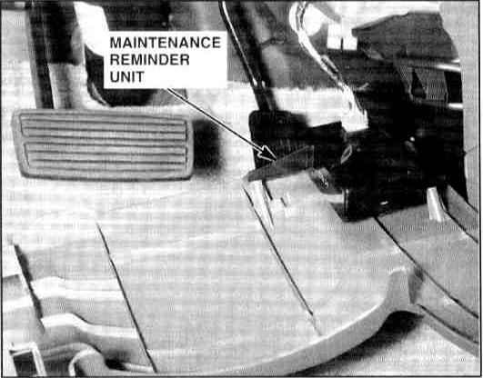

Operation CHARM
: Car repair manuals for everyone.
Home
>>
Acura
>>
1995
>>
Integra (RS, LS) L4-1834cc 1.8L DOHC PFI
>>
Repair and Diagnosis
>>
Maintenance
>>
Service Reminder Indicators
>>
Maintenance Required Lamp/Indicator
>>
Locations
>>
Maintenance Reminder Unit
>>
Photo 52
Photo 52

Rear Of Dashboard Lower Cover